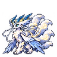
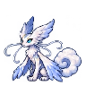
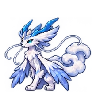

No.250
カエルヴェイン
風 希少
全ての航路が交わる空に現れる。六枚の尾を使って風を自在に操る。
基本データ
| 図鑑番号 | No.250 |
|---|---|
| タイプ | 風タイプ |
| 進化 | カエルシアからLv.42で進化 |
| 入手方法 | 凧揚げの断崖（Lv.67〜70）、溶岩の段丘（Lv.75〜78）の草むらに出現。 |
Lv.50の能力値
| 体力 | 303 | |
|---|---|---|
| 物理攻撃 | 177 | |
| 物理防御 | 130 | |
| 特殊攻撃 | 182 | |
| 特殊防御 | 125 | |
| 素早さ | 123 | |
| 命中 | 95 | |
| 回避 | 97 |
冒険中の能力値はレベルに応じて上がります。オンライン対戦の通常レンタルはLv.50で統一されます。
覚える技
| 技 | タイプ | 分類 | 威力 | 命中 | PP | 効果 |
|---|---|---|---|---|---|---|
| 天穹の奔流 | 風 | 特殊 | 52 | 80 | 10 | 風の力をすべて注ぐ特殊攻撃。威力は最大級だが、命中がやや低い。10%で目眩にすることがある。 |
| 雷雲の裂け目 | 風 | 物理 | 42 | 90 | 10 | 風の力で打ち込む強力な物理攻撃。10%で目眩にすることがある。 |
| 暁を駆ける | 無 | 物理 | 40 | 92 | 15 | 夜明けの光をまとって駆け抜ける強い物理攻撃。どのタイプにも等しく当たる。 |
| 晴天の贈り物 | 風 | 回復 | — | — | 10 | 風の力で最大体力の45%を回復する。 PPを1消費する。 |
進化の系譜

カエリLv.24 ▶
カエルシアLv.42 ▶- カエルヴェイン
タイプ相性
風タイプの技は晶タイプに強く（1.5倍）、晶タイプの技を受けると効果が大きくなります。同じタイプの技を使うと威力が1.15倍になります。